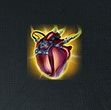
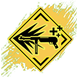

GARENA FREE FIRE
 |
Se transforma en un arbusto con una reducción del 5% en la velocidad de movimiento por 15s. Enfriamiento: 200s. La transformación termina cuando Wukong ataca. El enfriamiento se reinicia cuando Wukong derriba a un enemigo. |
|---|---|
| Crea una zona de curación de 3.5m de radio. En el interior, el usuario y los aliados recuperan 10 PV/s. La ayuda se activará automáticamente cuando sea necesario. La zona dura 12s. Los efectos de ayudar a los compañeros de equipo se pueden mejorar con otras habilidades. Enfriamiento: 90s. |
|
.jpg) |
Forma un escudo de 5m de ancho que reduce 60% del daño del arma proveniente del frente. Al disparar, la reducción de daño se reduce 20%. Duración: 5s. Enfriamiento: 70s. |
Modo Extremo: Obtén 60 PV temporales durante 125. Durante este tiempo, los efectos de curación de PV aumentan 75%. Enfriamiento: 75s. |
|
PE máximo aumenta a 50. Modo Jiu-jitsu: Los aliados dentro de 6m obtienen un 600% de aumento en el porcentaje de conversión de PE. Modo Psicología: Recupera 3 PE cada 2s, hasta 250 PE. Enfriamiento de cambio de modo: 65. |
|
|  | Libera una onda electromagnética de 8m que inhabilita la activación de habilidades de los enemigos, inflige 25 de daño e interrumpe la cuenta regresiva de su interacción. Duración: 20s Enfriamiento: 75s. |
Obtén 40 Puntos de Escudo extras al inicio de la partida. Recupera Puntos de Escudo tras sobrevivir a un combate. |
|
|---|---|
Después de derribar a un enemigo, entra en el modo Destacado, que aumenta 18% la velocidad de disparo y 12% la velocidad de movimiento, pero luego decae rápidamente. Duración: 6s. Durante el modo Destacado, derribar enemigos consecutivamente reiniciará la cuenta regresiva y aumentará 4% más la velocidad de disparo y 3% la velocidad de movimiento. |
|
|  | Al usar armas, golpear a un enemigo recupera algo de PV para el usuario, derribar a un enemigo recupera un 20% de PV. |
Velocidad al correr aumentada en 6%. Habilidad Renacida: Activada después de 4s de correr, los primeros 1 disparos al objetivo infligen 106% de daño. Duración 5s. |
|
Come hongos y usa botiquines 25% más. |
|
El usuario y los aliados dentro de 12m puede bloquear 15% de daño usando su PE . en este caso, la cantidad de PE deducida de los aiados se agregra a los PE del usuario dela habilidad |